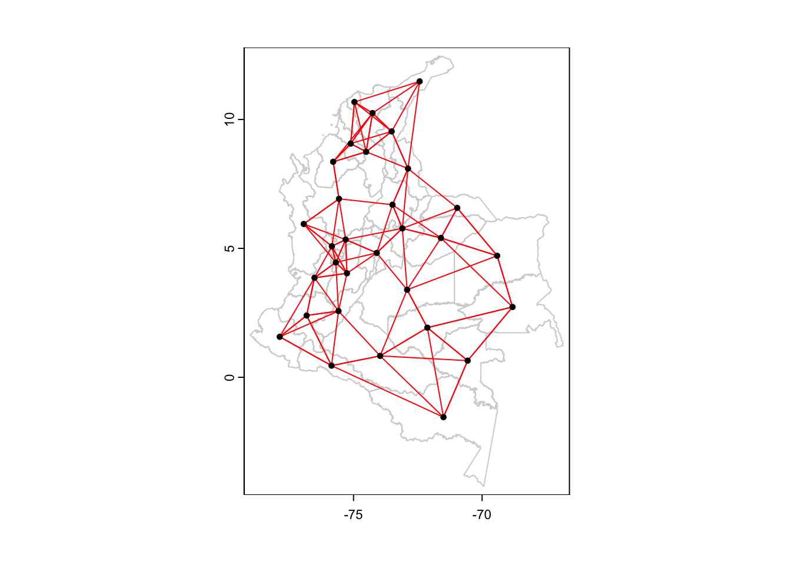
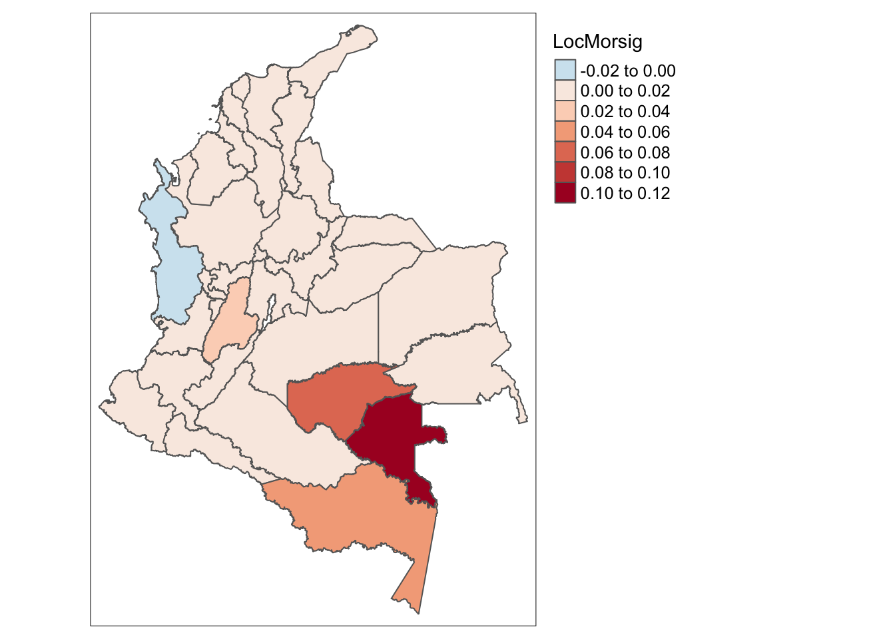

1. Cargue las librerías a utilizar (terra, tmap, sf, spdep).
terra 1.7.71
Breaking News: tmap 3.x is retiring. Please test v4, e.g. with
remotes::install_github('r-tmap/tmap')
Linking to GEOS 3.11.0, GDAL 3.5.3, PROJ 9.1.0; sf_use_s2() is TRUE
Loading required package: spData
To access larger datasets in this package, install the spDataLarge
package with: `install.packages('spDataLarge',
repos='https://nowosad.github.io/drat/', type='source')`
2. Ubicar el directorio de trabajo en la ubicación del archivo actual
3. Descarge el shapefile llamado IncidenceMap, el cual tiene datos de incidencias por accidente ofídico a nivel departamental, defina su working directory y cargue los datos vectoriales.
#Leemos el mapa MapSB=vect("IncidenceMapClass/IncidenceMapClass.shp") #Vemos el mapa como un dataframeView(as.data.frame(MapSB))
4. Haga una gráfica de los datos de incidencia anual por cada 100.000 habitantes (Variable “InTot”). Para esto vamos a usar la librería tmap que hace mapas basado en el lenguaje por capas de ggplot. Cada + va aumentando una capa, y tenemos que usar el comando st_as_sf() sobre nuestro mapa para convertirlo a formato sf y que pueda ser usado por la librería. Con tm_shape definimos lo que graficaremos y la base de datos shapefile a utilizar, con tm_polygons elegimos las características de los polígonos y como los vamos a colorear, y con tm_legend definimos la leyenda de la figura.
5. Antes de calcular los indices, necesitamos definir los vecinos. Primero vamos a trabajar con vecinos contiguos, pero hay mas maneras de declarar vecinos. Para declarar los vecinos contiguos usamos el comando poly2nb(). En este comando toca transformar nuestro mapa nuevamente a sf.
6. Ahora, vamos a calcular la lista de pesos de cada vecino, lo cual es algo que hay que hacer para cada tipo de análisis de autocorrelación espacial, ya que gracias a esto podemos calcular los estadísticos. Usaremos la funci’on nb2listw() para definir estos pesos, y en esta función style=”U” define un peso igual para cada vecino, donde la suma total da igual a 1.
#Asignamos los pesos a cada vecinolw =nb2listw(nb,style="U")
7. Con estos pesos ya podemos calcular la incidencia desfazada (con lag), usando el comando lag.litw(). Para esto usamos nuestra lista de pesos, y la variable InTot. Una ves calculada esta incidencia desfazada, podemos hacer el moran plot para ver si tenemos algún tipo de asociación, y mirar una regresión lineal normal para ver el comportamiento y el valor de la pendiente.
#Regresion lineal entre datos "lageados" y datossummary(lm(Inc.lag~MapSB$InTot))
Call:
lm(formula = Inc.lag ~ MapSB$InTot)
Residuals:
Min 1Q Median 3Q Max
-0.80655 -0.29881 -0.08055 0.14532 1.42701
Coefficients:
Estimate Std. Error t value Pr(>|t|)
(Intercept) 0.412266 0.118717 3.473 0.001638 **
MapSB$InTot 0.013353 0.003483 3.833 0.000628 ***
---
Signif. codes: 0 '***' 0.001 '**' 0.01 '*' 0.05 '.' 0.1 ' ' 1
Residual standard error: 0.4701 on 29 degrees of freedom
Multiple R-squared: 0.3363, Adjusted R-squared: 0.3134
F-statistic: 14.69 on 1 and 29 DF, p-value: 0.000628
8. Ahora, vamos a calcular el p-val de forma corregida y analítica, y también con simulaciones de Montecarlo. Recuerde que siempre es mejor usar las simulaciones de Montecarlo para evitar tener tantos supuestos. El comando moran.test() nos permite calcular de forma analítica el p-value y el índice de moran, mientras que moran.mc() nos permite hacer simulaciones de montercarlo para calcularlo.
#p-val analítico con suposicionesmoran.test(MapSB$InTot,lw)
Moran I test under randomisation
data: MapSB$InTot
weights: lw
Moran I statistic standard deviate = 5.0437, p-value = 2.283e-07
alternative hypothesis: greater
sample estimates:
Moran I statistic Expectation Variance
0.465294999 -0.033333333 0.009773473
#P-VAL CON MONTECARLO#P val con menos suposiciones. Ojo con nsim, ya que es el que define que tan robusto es mi estimación de la distribución. plot(MC)#Grafico distribucion p-val a partir de montecarloMC=moran.mc(MapSB$InTot,lw,nsim=100000) MC
Monte-Carlo simulation of Moran I
data: MapSB$InTot
weights: lw
number of simulations + 1: 100001
statistic = 0.46529, observed rank = 1e+05, p-value = 1e-05
alternative hypothesis: greater
9. Tenemos una autocorrelación espacial en nuestros datos de incidencia por mordedura de serpientes. Ahora, queremos cambiar el tipo de vecinos y usar K-Nearest. Para esto primero debemos sacar un data.frame que tenga las coordenadas de los centroides de cada departamento, para sobre esto calcular los vecinos mas cercanos con base en distancias entre puntos. Con crds() obtenemos un data.frame de coordenadas de un set de puntos, y con centroids() obtenemos los centroides de un mapa vectorial. Con knearneigh() definimos la lista de vecinos mas cercanos, pero sale en un formato que no se puede usar para calcular los pesos con nb2listw(). Por esto, toca usar el comando knn2nb() para pasar el formato al necesario y poder realizar nuestro análisis.
#Obtenemos centroidescoo=crds(centroids(MapSB))#3 vecinos mas cercanosnb2=knearneigh(coo,k=3) #Pasamos a formato de vecinosnb2=knn2nb(nb2)
10. Ya con esto, podemos volver a calcular los pesos y calcular el índice de Moran.
#PESOSlw=nb2listw(nb2,style="U",zero.policy=T)MI =moran.mc(MapSB$TotCases,lw,nsim=10000,zero.policy=T) MI
Monte-Carlo simulation of Moran I
data: MapSB$TotCases
weights: lw
number of simulations + 1: 10001
statistic = 0.36061, observed rank = 9992, p-value = 0.0008999
alternative hypothesis: greater
11. Seguimos obteniendo una autocorrelación espacial positiva para la incidencia por cada 100.000 habitantes por año de accidente ofídico. Ahora vamos a calcular el valor de Moran local. Para esto, el procedimiento es el mismo. En este caso vamos a trabajar con los 4 vecinos mas cercanos.
#Definimos nuevamente los centroides y sacamos las coordenadascoo=crds(centroids(MapSB))#Usamos los 4 vecinos mas cercanosnb2=knearneigh(coo,k=4) #Cambiamos el formatonb2=knn2nb(nb2)
12. Algo interesante de analizar es ver un plot en el que tengamos las conexiones obtenidas entre cada departamento y sus vecinos, y esto lo podemos graficar con los gráficos default de R.
#Graficamos los bordes de los departamentosplot(MapSB,border="lightgrey") #Añadimos las líneas en rojo de los vecinos.plot(nb2,coo,pch=19,cex=0.6,add=TRUE,col="red")

13. Antes de calcular el moran local, tenemos que calcular la lista de pesos.
wb=nb2listw(nb,zero.policy=T,style="U")
14. Ya con esto podemos calcular el moran local. Usamos el comando localmoran_perm() ya que vamos a calcular p-values por permutaciones.
#MORAN I LOCAL local_moran=localmoran_perm(MapSB$InTot,wb,nsim=1000)
15. La variable local_moran consiste en una matriz con 9 columnas, donde Ii tiene el valor del índice para cada departamento, y Pr(z != E(Ii)) es el p-value de las simulaciones por Montecarlo. Vamos a adicionar el índice de moran y el pval a nuestro mapa, y lo haremos con base en la posición de la columna.
#MAPA MORAN LOCAL #Local moran MapSB$LocMor=local_moran[,1] #pvalMapSB$LocMorPVAL=local_moran[,6]
16. Por último, vamos a graficar únicamente el valor del moran local para los lugares con significancia, dejando los sitios no significativos un valor de cero. Para esto primero creamos una variable que es significancia que va a ser TRUE o FALSE con base en nuestro p-value, y luego multiplicamos el índice de moran por esta variable.
#Significancia: 0.05, por ende a los menores les damos valor de TRUE (1) y los mayores de FALSE (0)MapSB$sig=(MapSB$LocMorPVAL<0.05) #Aca hacemos la multiplicación, todo lo significativo (MapSB$sig < 0.05) es multiplicado por 1, y lo otro por cero.MapSB$LocMorsig=MapSB$LocMor*MapSB$sig
17. Ahora graficamos esta variable. Podemos observar que la parte mas afectada siendo valores positivos de autocorrelación aquellos donde tenemos mas casos en cada departamento predicen mas casos en sus vecinos.
Variable(s) "LocMorsig" contains positive and negative values, so midpoint is set to 0. Set midpoint = NA to show the full spectrum of the color palette.

18. Por último, vamos a calcular el índice de GetisOrd con base en la misma lista de pesos que usamos para el moran local. Usamos el comando localG_perm() para obtener los resultados con permutaciones y calcular p-values sin suposiciones.
Gi=localG_perm(MapSB$InTot,wb,nsim=1000)
19. Primero añadimos al mapa los valores del índice, y usamos as.matrix() para pasar a formato numerico:
Giv=matrix(Gi) #Formato vector para añadir al mapa
20. El output de local_perm() viene también con atributos de clase, los cuales tienen mas información como el tipo de cluster y los p-values. Para obtener el tipo de cluster (High, Low) usamos el atributo cluster:
#Obtenemos el numero de clusterClust=attr(Gi,"cluster")
21. Para obtener los pvalues, tenemos que guardar como data.frame el atributo internals de nuestro Gi:
Res=data.frame(attr(Gi,"internals"))
22. Ya con esto añadimos los datos al mapa:
#Obtenemos los p-values con simulaciones Pval=Res$Pr.z....E.Gi...Sim #Definimos significativos y no significativosPval=Pval<0.05#Añadimos el Getis Ord al mapaMapSB$Gi=Giv #Añadimos el tipo de cluster MapSB$GiPval=MapSB$Gi*Pval #Añadimos solo los Getis Ord significativosMapSB$Giclust=Clust #Añadimos solo los Getis Ord significativosMapSB$GiPval=MapSB$Gi*Pval
23. Ya con esto, procedemos a gráficar los Getis-ord significativos.